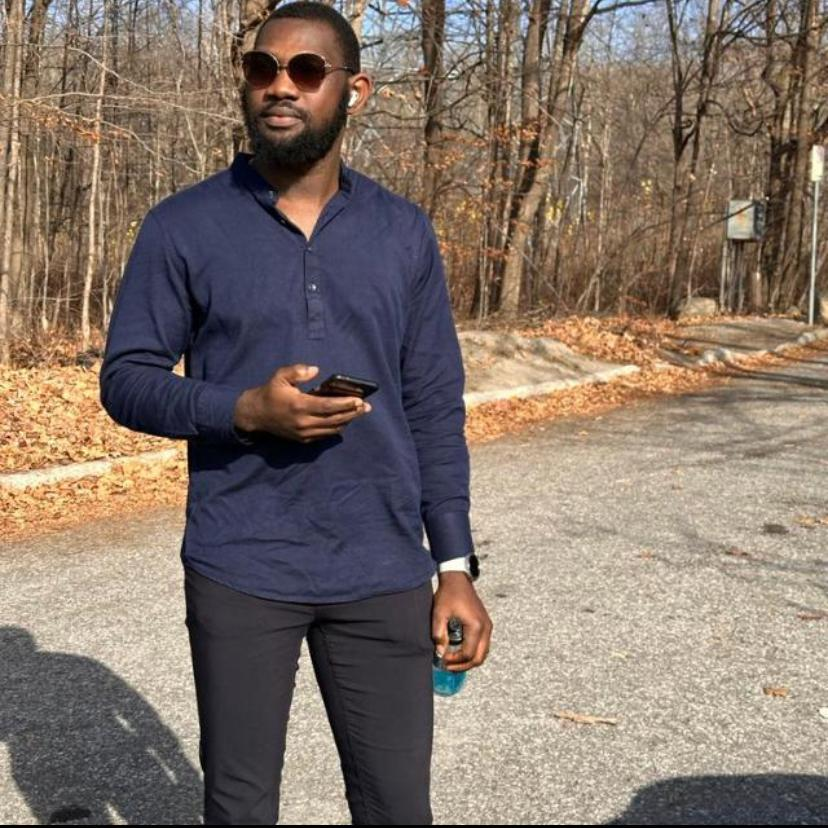

About Myself
✋ Hi, I have always believed that the journey of self discovery is an ongoing process, a continous exploration of the complexities that makes us unique indiviuals.My story is a reflection of this never-ending quest to understand myself,my aspirations and my place in the world.
Biography
As a Nigerian with a deep well of ambition and curiosity, Adedeji is on a continuous journey of learning and growth in the field of software development. Currently enhancing their skill set through a diploma course in software development at Altschool Africa, Adedeji embodies a blend of enthusiasm for technology and a drive to broaden their knowledge. Their journey is not just about acquiring technical skills but also about exploring the vast potential within the tech industry, driven by a passion to contribute and innovate. Adedeji's commitment to their studies and their ambitious nature marks them as a promising figure in the world of software development.
Life as an AltSchooler
I got to know about Altschool from one of my friends and then i went to the website and instantly i developed the urge to be part of the team.
The school is online based and as the name implies, it is an alternative approach to learning..it has over 10,000 students accross all countries from the world and the school is divided into three as at when i applied and my school which is school of engineering is further divided into three tracks which are basically;
It is a one year program and the program is further divided into 3 semesters..You want to more about my school?,Stay tuned for my next article You can also register too by clicking on this link.
- Frontend Engineering
- Backend Engineering
- Cloud Engineering
My Goals
Being in a tech school is very exciting and can be tasking too but i am ready to put in all the work to become a better person after the program. Here is a list of goals i want to achieve during my time in AltSchool.
1. Develop Technical Skills;
By the End of this programme, I want to be able to master the technical skills and knowledge necessary to become a world class engineer
2. Gain Practical Experience;
I want to be able to apply what i learnt in real-world situations through internships,projects and co-op programs
3. Network;
Connect with professors,fellow students, and professionals in your field. Networking can lead to job opportunities and collaborations.
4. Work on Personal Projects;
By the end of this programme, I want to be able to work on complex projects i never dared to work on before and also work on personal tech projects that i'm passionate about.
5. Certifications;
I aim to earn relevant certifications that can boost my career prospects.
6. Become part of the Team
That's my dream!!, I want to be part of the software engineers that make things happen at ALTSCHOOL.Gallery

Contact
You can chat me up on whatsapp by clicking here,you can call me or text me or send a mail .